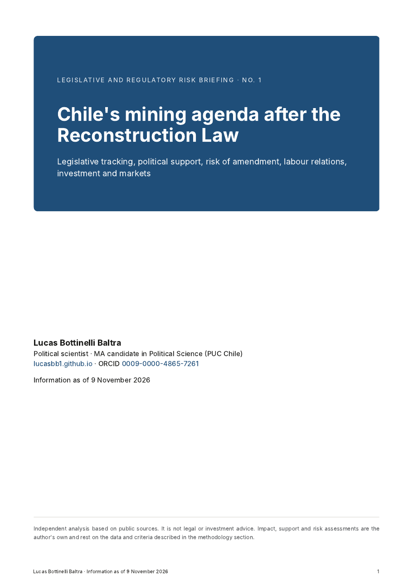

Consulting
Political, legislative and regulatory risk analysis
In this section I publish applied analysis for organisations that need to anticipate how the public agenda affecting them is moving. I use the same sources and methods as in my working papers, but with a different question. The question is no longer what explains a phenomenon, but what may change, when, and with what political support.
Briefings

Chile's mining agenda after the Reconstruction Law
- For whom
- Mining companies, suppliers, investors and industry associations following the sector's regulation in Chile.
- Contents
- Tracking of ten bills with impact, observed support and risk of amendment, each bloc's support in key votes, briefs on pending bills, labour relations, investment, the copper market and a comparison with Argentina's RIGI.
- Key finding
- The 2026 regulatory shift is already law, and risk moves to implementing regulations and environmental reform. Bills change substantially in Congress, and deputies from mining districts break with their party on key bills such as permits and the royalty.
- Sources
- Senate legislative records, floor votes in both chambers, legal texts and specialised press, all publicly available.
What this approach adds
- Measured indicators, not just descriptions. How much of a bill's text survives the legislative process, how long it takes, which blocs support it and which legislators break with their party, calculated from Congress's official records.
- Risk with explicit criteria. Each bill's impact, support and risk of amendment are assessed with rules set out in the methodology, so readers can challenge them.
- Territorial reading. Legislators' votes are matched with employment in their districts from the 2024 Census, which helps anticipate where a party may split.
- Traceability. Every figure points to a public source, and the data and code of the underlying research are published so they can be checked.
What these briefings do not cover
The briefings are political and legislative analysis with a cut-off date. They do not replace the work of a specialised sector consultancy, which offers, among other services, the following.
- Proprietary forecasts of mineral prices, supply and demand.
- Technical and economic project evaluation, operating costs and feasibility studies.
- Project-by-project permit tracking before the SEA, Sernageomin, the DGA and other agencies.
- First-hand industry intelligence from interviews and contacts within companies.
- Systematic comparison with other mining jurisdictions beyond the specific reference to Argentina.
- Legal, tax or investment advice.
The offer is complementary. It provides a reading of Congress, parties and territory, which shapes the environment in which those other analyses apply.
Areas of work
The briefings are independent analyses based on public sources and are not legal or investment advice. To discuss a tailored analysis, write to lucasbottinelli4@gmail.com.